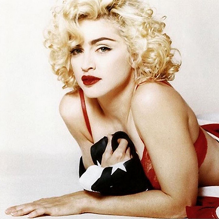

Кеті Перрі: 135 млн доларів (3-е місце в рейтингу "Forbes" і навіть додавати нічого не потрібно)

Стівен Спілберг: 130 млн доларів (такий дохід ему принесла компанія "Dream Works")

Опра Уїнфрі: 125 млн доларів (варто відзначити, що в 2014 році Опра була найбільш високооплачуваною зіркою з доходом 165 млн доларів)

Опра Вінфрі розповіла про секрет схуднення 18 кілограмів
Мадонна: 125 млн доларів (заробила завдяки своєму таланту і епатажності)
Роберт Дауні-молодший: 80 млн доларів (8-е місце "Forbes")

Тейлор Свіфт: 80 млн доларів (8-е місце "Forbes", але нещодавно співачка повідомила про те, що хоче зробити перерву в кар'єрі)

Том Круз: 75 млн доларів (однією з найприбутковіших робіт був фільм "Місія нездійсненна: Протокол Фантом")

Джастін Тімберлейк: 64 млн доларів (19-е місце "Forbes")

Джастін Тімберлейк
Леді Гага: 59 млн доларів (свій капітал заробила на концертах, рекламі та власних парфумах "Fame")

Брітні Спірс: 58 млн доларів (повернула собі місце в 10-ці завдяки телевізійним шоу і рекламі)